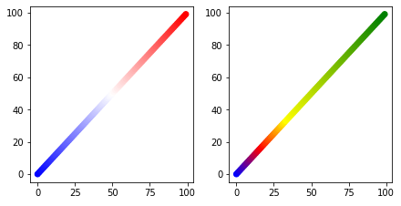

Yichen Wang's Blog
Hopefully I might update these someday?
Intro
This is a static blog where new posts are updated from time to time. Most articles will be related to my hobbies including listed below. Hope you can know more about me or even find something useful.
Topics
Most Recent
Create Colormap (cmap) for Matplotlib
When plotting, people definitely care about the color of the dots in there scatter plots.
import matplotlib.pyplot as plt
# For example, the 2-D data we want to plot comes this way
x, y = list(range(100)), list(range(100))
Usually there are two ways to set this feature:
1. Know the exact color representation of each dot and give it to color argument
plt.scatter(x, y, color=['red', 'blue']*50)
plt.show()
 Note that you can also say
Note that you can also say color='red' for set all dots to "red".
- When you have some sort of continuous value, and you want a color gradient to reflect the value, set
cto this value and usecmapto choose the color palette.
c = list(range(100))
plt.scatter(x, y, c=c, cmap='Pastel1')
plt.show()
 A classic scenario is that in Bioinformatics, when you have a PCA embedding of a set of samples and you plot the first two components as the
A classic scenario is that in Bioinformatics, when you have a PCA embedding of a set of samples and you plot the first two components as the x and y dimension, and then you want to use the color to represent the expression level of a gene of interests for these samples, you can directly throw the array of expression value to c.
However, though there has already been a long list of preset colormaps in matplotlib (use dir(matplotlib.cm) to have a quick look, this also gives you other functions and constants though), I still think it's good to have an access to define customized colormap with maximum flexibility. Therefore, I wrote myself a simple script for this functionality, which you can find here. Detailed documents and usage has already been stated in the script. Let's have a quick check on the example data above.
import generateCmap from matplotlib_cmap_generator
cmap1 = generateCmap(['blue', 'white', 'red'])
cmap2 = generateCmap(['blue', 'red', 'yellow', 'green'], [0, 1, 2, 6])
cms = [cmap1, cmap2]
fig, axs = plt.subplots(1, 2, figsize=(6, 3), constrained_layout=True)
for [ax, cmap] in zip(axs, cms):
ax.scatter(x, y, c=x, cmap=cmap)
plt.show()
 So the point of this function is that, you can set gradients varying from any colors you have in mind, and you can set as many colors as you can identify. Furthermore, the width of the interval of each gradient can also be set by the second argument, which stands for the relative value that each color should occur.
Jul. 1st, 2020
BTW, this is the first post in July. Finally I can have a real test on the "showMonth" feature of this website.